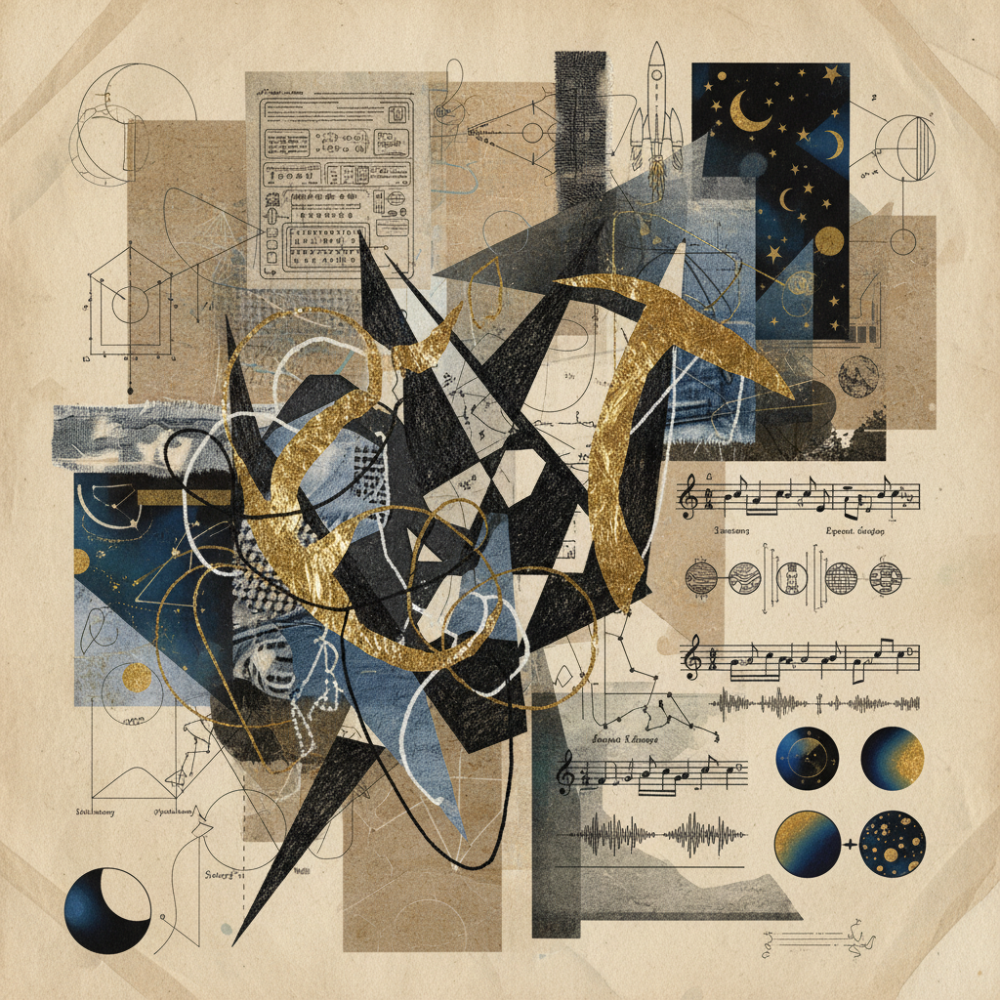

LOG_ID: ARC-770 // ENERGY_MAPPING
The Descent of the Spark
Phase II: Aries to Scorpio
"The primary impulse is a fire that consumes its own oxygen. To descend is not to vanish, but to transmute current into depth."
Where does impulse become depth?
Quantitative Energy Intensity
Metric 01
Aries Pulse
Hz
Frequency of raw initiative and undirected movement.
Metric 02
Scorpio Gravity
kN
Pressure of internal alchemy and psychological weight.
Metric 03
Transition Ratio
The coefficient of friction between desire and manifestation.
Integration Protocols
Tabular Reference V.II| Stage | Requirement | Clinical Observation |
|---|---|---|
| Release | Decreased surface tension. | |
| Reframe | Neutralization of shadow. | |
| Emergent | Final stabilization. |

Fragment 08-B
auto_awesome
"The archivist notes that the spark does not die; it simply changes state."
Internal Verification
Seal the entry with the following realization.